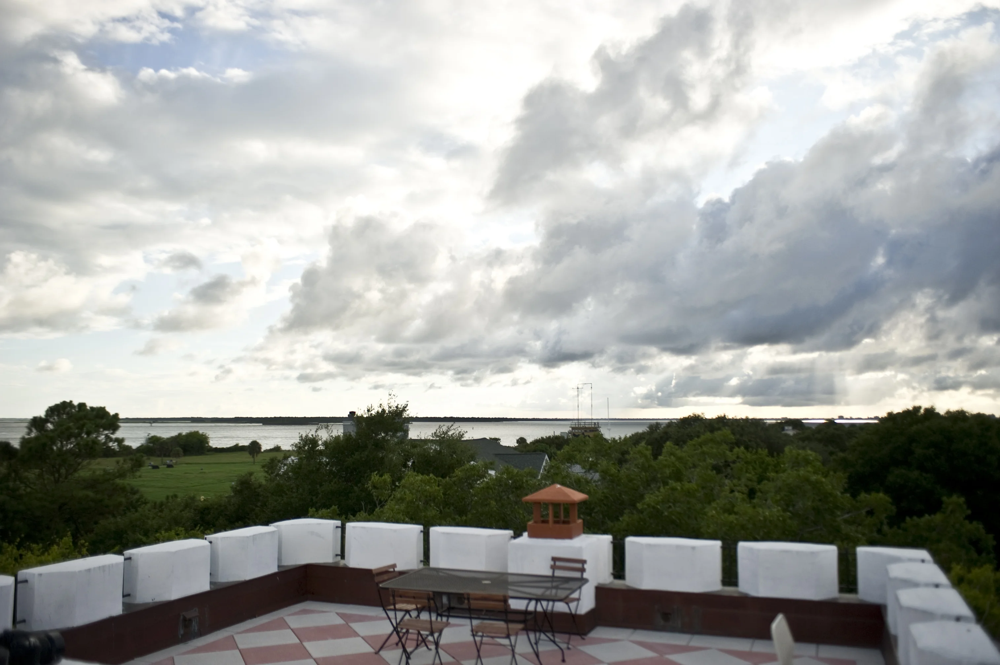
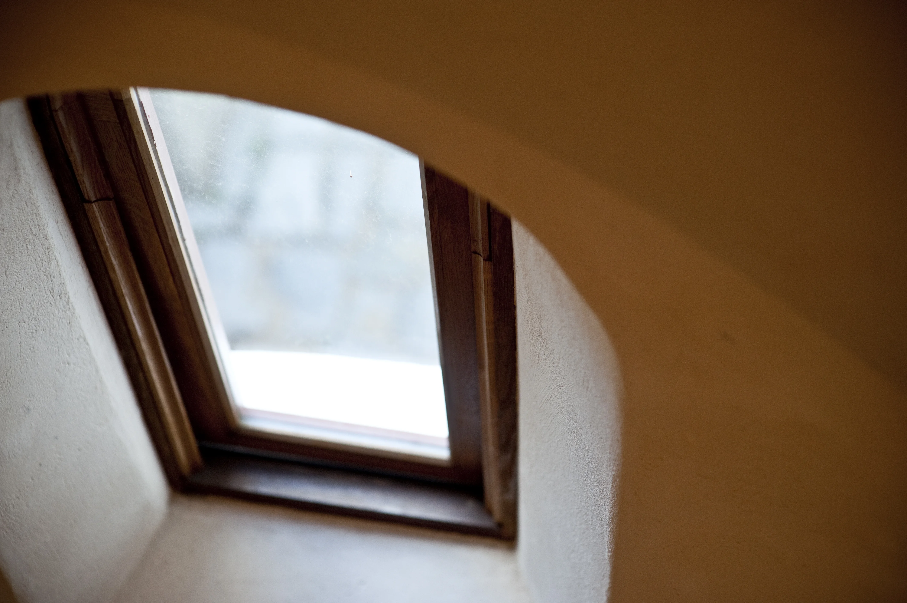
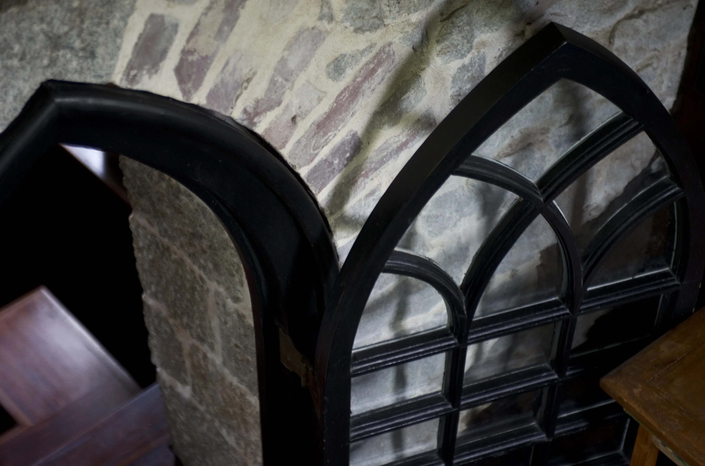
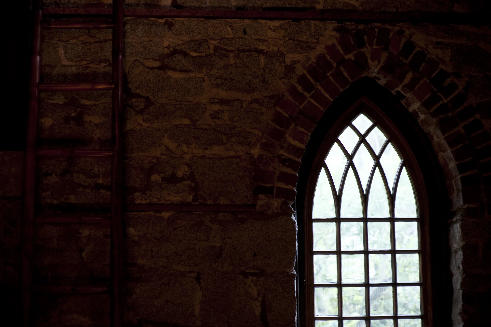

The Keep · The Summer Hall
Designed to look
older than the church it joined.
Massive cypress timbers. Romanesque arches answering, point-for-arch, the Gothic chapel built one hundred nineteen years before. Porches and rooftop terraces open to the garden, the harbor and the changing coastal light.
Read the chapter · 2010




The seam where Gothic meets Romanesque — 130 years of architecture in a single frame.
Drag the divider · Where the chapel meets the keep
The Garrison · Fort Moultrie
Sacred ground
absorbed by the federal machine.
As Fort Moultrie extended its coastal defenses, the government condemned the little chapel. In 1907 the keys were surrendered, and the stone nave became a post chapel for the soldiers of the fort.
Read the chapter · 1907


For the next forty years, the rough granite walls absorbed the prayers of soldiers the same way they had absorbed the Episcopal liturgy before them.
Chapel of the Holy Cross · The Winter Hall
The island
exhaling.
On the 12th of September, 1891, a cornerstone was laid on the western end of Sullivan's Island. What rose was "Medieval Gothic": rubble granite walls laid thick enough to hold a century's worth of whispers.
Read the chapter · 1891




"The stone nave was bare, its tall ceiling carried by open timber trusses and hammer beams — light entering only through the deep reveals of pointed-arch windows."— Witold Rybczynski, The Pennsylvania Gazette

The Full Estate
A stroll through the castle.
{{COUNT}} photographs · Drag, scroll or use the arrows · Select any image to enlarge